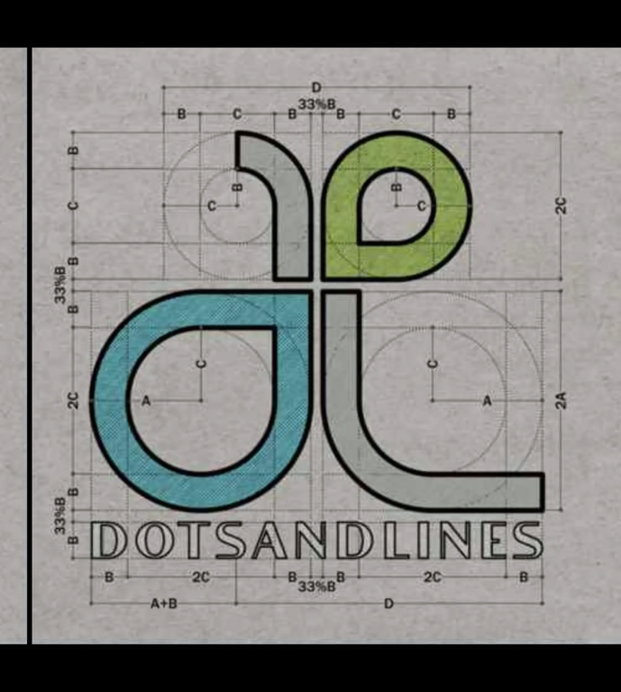

Designing spaces where creativity meets precision.
About Us
We are a multidisciplinary studio based in Mysore offering architecture, construction, and interior design.
Founded by an architect and an engineer, our studio fuses design vision with technical excellence to create functional, timeless, and emotionally resonant spaces.
Our Vision
To be a transformative force in design and construction by creating meaningful spaces rooted in sustainability and human-centric thinking.
Our Mission
To deliver integrated solutions that blend creativity with precision through personalized, process-driven, and sustainable experiences.
What We Offer

Architecture, Construction, and Interiors under one roof
Client-centric customization and collaboration
Transparent communication and milestone tracking
Sustainability-driven design and materials
Process-led execution with engineering synergy
Why Choose Us?
We combine creative sensibility with executional discipline to create contextual, high-quality spaces. From the first sketch to the final brick, our projects are rooted in sustainability, culture, and user empathy.